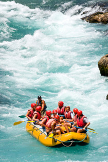

At Thunder Ridge White Water Rafting, we believe adventure should be both exhilarating and accessible to everyone. Whether you're a first-time paddler or a seasoned adrenaline junkie, our guided tours through wild mountain rapids are tailored to deliver unforgettable thrills and lifelong memories. Our passionate team is dedicated to safety, fun, and sharing the beauty of the river with you.

Thunder Ridge White Water Rafting
History
Founded in 1998 by a pair of outdoor enthusiasts with a love for the river, Thunder Ridge has grown from a single raft and a pickup truck into a full-service adventure outfitter. What started as weekend trips with friends turned into a passion-fueled business that now welcomes thrill-seekers from around the globe. Our reputation is built on authentic experiences, friendly guides, and an uncompromising respect for nature.
Over the years, we’ve led thousands of successful trips through the roaring waters of Thunderwhirl Canyon and beyond. Each journey is a new opportunity to connect people with the outdoors in a meaningful and exhilarating way. From family-friendly floats to high-adrenaline Class V rapids, our excursions are crafted to showcase the raw power and stunning beauty of our local rivers.
Adventure Awaits You!